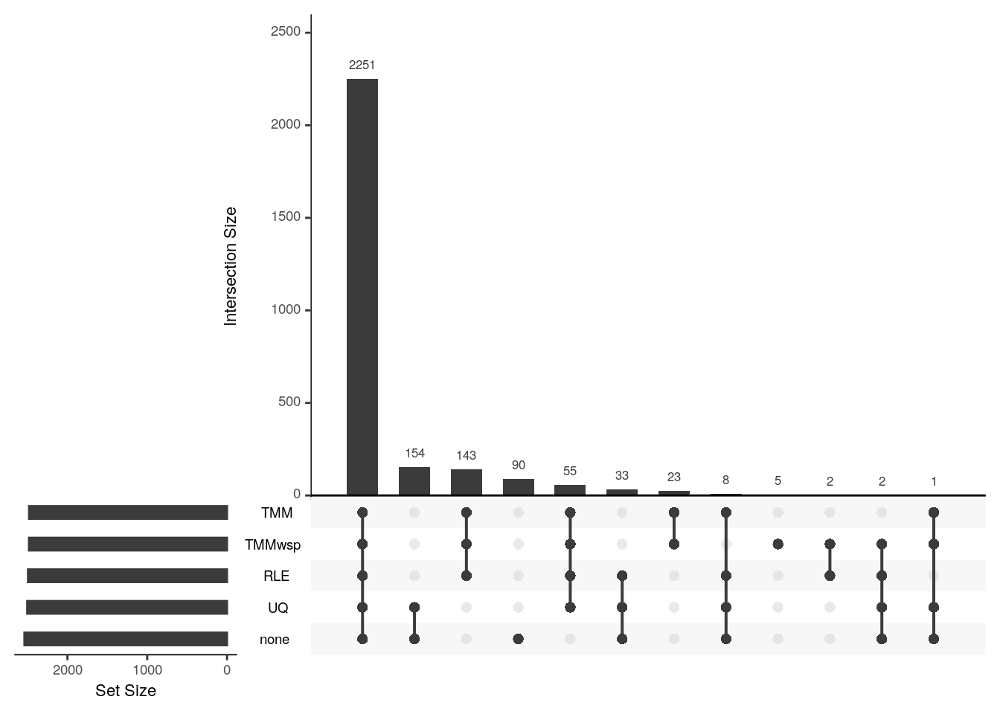
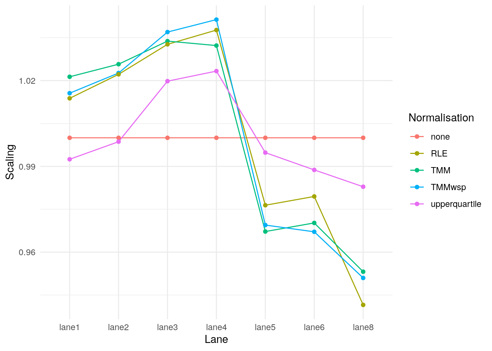

Last updated: 2023-10-13
Checks: 7 0
Knit directory: muse/
This reproducible R Markdown analysis was created with workflowr (version 1.7.1). The Checks tab describes the reproducibility checks that were applied when the results were created. The Past versions tab lists the development history.
Great! Since the R Markdown file has been committed to the Git repository, you know the exact version of the code that produced these results.
Great job! The global environment was empty. Objects defined in the global environment can affect the analysis in your R Markdown file in unknown ways. For reproduciblity it’s best to always run the code in an empty environment.
The command set.seed(20200712) was run prior to running
the code in the R Markdown file. Setting a seed ensures that any results
that rely on randomness, e.g. subsampling or permutations, are
reproducible.
Great job! Recording the operating system, R version, and package versions is critical for reproducibility.
Nice! There were no cached chunks for this analysis, so you can be confident that you successfully produced the results during this run.
Great job! Using relative paths to the files within your workflowr project makes it easier to run your code on other machines.
Great! You are using Git for version control. Tracking code development and connecting the code version to the results is critical for reproducibility.
The results in this page were generated with repository version 4bc5f6a. See the Past versions tab to see a history of the changes made to the R Markdown and HTML files.
Note that you need to be careful to ensure that all relevant files for
the analysis have been committed to Git prior to generating the results
(you can use wflow_publish or
wflow_git_commit). workflowr only checks the R Markdown
file, but you know if there are other scripts or data files that it
depends on. Below is the status of the Git repository when the results
were generated:
Ignored files:
Ignored: .Rhistory
Ignored: .Rproj.user/
Ignored: r_packages_4.3.0/
Ignored: r_packages_4.3.1/
Untracked files:
Untracked: analysis/cell_ranger.Rmd
Untracked: analysis/complex_heatmap.Rmd
Untracked: analysis/sleuth.Rmd
Untracked: analysis/tss_xgboost.Rmd
Untracked: code/multiz100way/
Untracked: data/HG00702_SH089_CHSTrio.chr1.vcf.gz
Untracked: data/HG00702_SH089_CHSTrio.chr1.vcf.gz.tbi
Untracked: data/ncrna_NONCODE[v3.0].fasta.tar.gz
Untracked: data/ncrna_noncode_v3.fa
Untracked: data/netmhciipan.out.gz
Untracked: data/test
Untracked: export/davetang039sblog.WordPress.2023-06-30.xml
Untracked: export/output/
Untracked: women.json
Unstaged changes:
Modified: analysis/graph.Rmd
Modified: analysis/tissue.Rmd
Note that any generated files, e.g. HTML, png, CSS, etc., are not included in this status report because it is ok for generated content to have uncommitted changes.
These are the previous versions of the repository in which changes were
made to the R Markdown (analysis/edger.Rmd) and HTML
(docs/edger.html) files. If you’ve configured a remote Git
repository (see ?wflow_git_remote), click on the hyperlinks
in the table below to view the files as they were in that past version.
| File | Version | Author | Date | Message |
|---|---|---|---|---|
| Rmd | 4bc5f6a | Dave Tang | 2023-10-13 | edgeR normalisation |
A short post on comparing the different normalisation methods
implemented in edgeR and their downstream effects on
differential expression calling.
Install using BiocManager.
if (!requireNamespace("BiocManager", quietly = TRUE))
install.packages("BiocManager")
BiocManager::install("edgeR")Load package.
library("edgeR")
packageVersion("edgeR")[1] '3.42.4'Historically, calcNormFactors was the function used for
normalisation but normLibSizes is the new name. The help
page on normLibSizes provides some details on the
normalisation methods.
Calculate scaling factors to convert the raw library sizes for a set of sequenced samples into normalized effective library sizes.
This function computes scaling factors to convert observed library sizes into normalized library sizes, also called “effective library sizes”. The effective library sizes for use in downstream analysis are lib.size * norm.factors where lib.size contains the original library sizes and norm.factors is the vector of scaling factors computed by this function.
The TMM method implements the trimmed mean of M-values method proposed by Robinson and Oshlack (2010). By default, the M-values are weighted according to inverse variances, as computed by the delta method for logarithms of binomial random variables. If refColumn is unspecified, then the column whose count-per-million upper quartile is closest to the mean upper quartile is set as the reference library.
The TMMwsp method stands for “TMM with singleton pairing”. This is a variant of TMM that is intended to perform better for data with a high proportion of zeros. In the TMM method, genes that have zero count in either library are ignored when comparing pairs of libraries. In the TMMwsp method, the positive counts from such genes are reused to increase the number of features by which the libraries are compared. The singleton positive counts are paired up between the libraries in decreasing order of size and then a slightly modified TMM method is applied to the re-ordered libraries. If refColumn is unspecified, then the column with largest sum of square-root counts is used as the reference library.
RLE is the scaling factor method proposed by Anders and Huber (2010). We call it “relative log expression”, as median library is calculated from the geometric mean of all columns and the median ratio of each sample to the median library is taken as the scale factor.
The upperquartile method is the upper-quartile normalization method of Bullard et al (2010), in which the scale factors are calculated from the 75% quantile of the counts for each library, after removing genes that are zero in all libraries. The idea is generalized here to allow normalization by any quantile of the count distributions.
If method=“none”, then the normalization factors are set to 1.
For symmetry, normalization factors are adjusted to multiply to 1. Rows of object that have zero counts for all columns are removed before normalization factors are computed. The number of such rows does not affect the estimated normalization factors.
I created a dataset to test the different normalisation methods; this was based on the hypothetical situation described in Robinson and Oshlack.
There are four samples; column one and two are the controls
(c1 and c2) and column three and four are the
patients (p1 and p2).
eg1 <- data.frame(
c1 = rep(10, 50),
c2 = rep(10, 50),
p1 = c(rep(20, 25),rep(0,25)),
p2 = c(rep(20, 25),rep(0,25))
)
colnames(eg1)[1] "c1" "c2" "p1" "p2"25 transcripts are in all four samples in equal amount. (They are equal because they are sequenced at twice the depth in the patient samples, i.e., the patient samples have half the number of transcripts than the controls (25 versus 50) so they are sequenced at twice the depth.)
eg1[c(1:3, 23:25), ] c1 c2 p1 p2
1 10 10 20 20
2 10 10 20 20
3 10 10 20 20
23 10 10 20 20
24 10 10 20 20
25 10 10 20 20Another 25 transcripts are only present in the controls and their expression is the same as the first 25 transcripts in the controls.
eg1[c(26:28, 48:50), ] c1 c2 p1 p2
26 10 10 0 0
27 10 10 0 0
28 10 10 0 0
48 10 10 0 0
49 10 10 0 0
50 10 10 0 0The four samples have exactly the same depth (500 counts).
colSums(eg1) c1 c2 p1 p2
500 500 500 500 From the Quick start section in the
edgeRUsersGuide.pdf:
edgeR offers many variants on analyses. The glm approach is more popular than the classic approach as it offers great flexibilities. There are two testing methods under the glm framework: likelihood ratio tests and quasi-likelihood F-tests. The quasi-likelihood method is highly recommended for differential expression analyses of bulk RNA-seq data as it gives stricter error rate control by accounting for the uncertainty in dispersion estimation. The likelihood ratio test can be useful in some special cases such as single cell RNA-seq and datasets with no replicates.
A typical edgeR analysis might look like the following.
group <- factor(c(1,1,2,2))
y <- DGEList(counts=eg1, group=group)
keep <- filterByExpr(y)
y <- y[keep,,keep.lib.sizes=FALSE]
y <- normLibSizes(y)
design <- model.matrix(~group)
y <- estimateDisp(y, design)Warning: Zero sample variances detected, have been offset away from zerofit <- glmQLFit(y, design)Warning: Zero sample variances detected, have been offset away from zeroqlf <- glmQLFTest(fit, coef=2)
topTags(qlf)Coefficient: group2
logFC logCPM F PValue FDR
26 -6.918863 13.67765 2.776842e+21 3.378219e-11 6.756438e-11
27 -6.918863 13.67765 2.776842e+21 3.378219e-11 6.756438e-11
28 -6.918863 13.67765 2.776842e+21 3.378219e-11 6.756438e-11
29 -6.918863 13.67765 2.776842e+21 3.378219e-11 6.756438e-11
30 -6.918863 13.67765 2.776842e+21 3.378219e-11 6.756438e-11
31 -6.918863 13.67765 2.776842e+21 3.378219e-11 6.756438e-11
32 -6.918863 13.67765 2.776842e+21 3.378219e-11 6.756438e-11
33 -6.918863 13.67765 2.776842e+21 3.378219e-11 6.756438e-11
34 -6.918863 13.67765 2.776842e+21 3.378219e-11 6.756438e-11
35 -6.918863 13.67765 2.776842e+21 3.378219e-11 6.756438e-11Number of differentially expressed genes.
table(p.adjust(qlf$table$PValue, method="fdr") < 0.01)
FALSE TRUE
25 25 Function for edgeR workflow.
run_edger <- function(norm_method){
group <- factor(c(1,1,2,2))
y <- DGEList(counts=eg1, group=group)
keep <- filterByExpr(y)
y <- y[keep,,keep.lib.sizes=FALSE]
y <- normLibSizes(y, method=norm_method)
design <- model.matrix(~group)
y <- estimateDisp(y, design)
fit <- glmQLFit(y, design)
qlf <- glmQLFTest(fit, coef=2)
qlf$table$FDR <- p.adjust(qlf$table$PValue, method="fdr")
qlf
}Run differential expression without any normalisation step.
norm_none <- run_edger("none")
table(norm_none$table$FDR < 0.01)
TRUE
50 Without normalisation, every transcript is differentially expressed.
Normalise using the weighted trimmed mean of M-values method.
norm_tmm <- run_edger("TMM")
norm_tmm$samples group lib.size norm.factors
c1 1 500 0.7071068
c2 1 500 0.7071068
p1 2 500 1.4142136
p2 2 500 1.4142136The norm.factors is used to normalise the library size.
Using the normalised library size, transcript one is equally expressed
in all four samples, i.e., not differentially expressed.
norm_lib_size <- norm_tmm$samples$lib.size * norm_tmm$samples$norm.factors
rbind(
raw = eg1[1, ],
normalised = eg1[1, ] / norm_lib_size
) c1 c2 p1 p2
raw 10.00000000 10.00000000 20.00000000 20.00000000
normalised 0.02828427 0.02828427 0.02828427 0.02828427With TMM normalisation, only half of the transcripts are differentially expressed (the last 25 transcripts in the control samples).
table(norm_tmm$table$FDR < 0.01)
FALSE TRUE
25 25 The TMMwsp method stands for “TMM with singleton pairing”. This is a variant of TMM that is intended to perform better for data with a high proportion of zeros.
norm_tmm_wsp <- run_edger("TMMwsp")
table(norm_tmm_wsp$table$FDR < 0.01)
FALSE TRUE
25 25 RLE is the scaling factor method proposed by Anders and Huber (2010). We call it “relative log expression”, as median library is calculated from the geometric mean of all columns and the median ratio of each sample to the median library is taken as the scale factor.
norm_rle <- run_edger("RLE")
table(norm_rle$table$FDR < 0.01)
FALSE TRUE
25 25 The upperquartile method is the upper-quartile normalization method of Bullard et al (2010), in which the scale factors are calculated from the 75% quantile of the counts for each library, after removing genes that are zero in all libraries. The idea is generalized here to allow normalization by any quantile of the count distributions.
norm_uq <- run_edger("upperquartile")
table(norm_uq$table$FDR < 0.01)
FALSE TRUE
25 25 Perform differential gene expression analysis using various
normalisation methods on the pnas_expression.txt dataset,
which is from Li et
al..
my_url <- "https://davetang.org/file/pnas_expression.txt"
eg2 <- read.table(my_url, header=TRUE, sep="\t")
rownames(eg2) <- eg2[,1]
eg2 <- eg2[,2:8]
head(eg2) lane1 lane2 lane3 lane4 lane5 lane6 lane8
ENSG00000215696 0 0 0 0 0 0 0
ENSG00000215700 0 0 0 0 0 0 0
ENSG00000215699 0 0 0 0 0 0 0
ENSG00000215784 0 0 0 0 0 0 0
ENSG00000212914 0 0 0 0 0 0 0
ENSG00000212042 0 0 0 0 0 0 0Create run_edger_pnas to run the edgeR workflow on the
real dataset.
run_edger_pnas <- function(norm_method){
group <- c(rep("Control",4),rep("DHT",3))
y <- DGEList(counts=eg2, group=group)
keep <- filterByExpr(y)
y <- y[keep,,keep.lib.sizes=FALSE]
y <- normLibSizes(y, method=norm_method)
design <- model.matrix(~group)
y <- estimateDisp(y, design)
fit <- glmQLFit(y, design)
qlf <- glmQLFTest(fit, coef=2)
qlf$table$FDR <- p.adjust(qlf$table$PValue, method="fdr")
qlf
}Carry out differential gene expression analysis with no normalisation.
norm_none_eg2 <- run_edger_pnas("none")
norm_none_eg2$samples group lib.size norm.factors
lane1 Control 962533 1
lane2 Control 1137493 1
lane3 Control 1417119 1
lane4 Control 1460128 1
lane5 DHT 1797445 1
lane6 DHT 1808440 1
lane8 DHT 672880 1Number of differentially expressed genes.
table(norm_none_eg2$table$FDR < 0.01)
FALSE TRUE
8695 2539 TMM normalisation.
norm_tmm_eg2 <- run_edger_pnas("TMM")
table(norm_tmm_eg2$table$FDR < 0.01)
FALSE TRUE
8753 2481 TMMwsp normalisation.
norm_tmm_wsp_eg2 <- run_edger_pnas("TMMwsp")
table(norm_tmm_wsp_eg2$table$FDR < 0.01)
FALSE TRUE
8752 2482 RLE.
norm_rle_eg2 <- run_edger_pnas("RLE")
table(norm_rle_eg2$table$FDR < 0.01)
FALSE TRUE
8740 2494 Upper quartile normalisation.
norm_uq_eg2 <- run_edger_pnas("upperquartile")
table(norm_uq_eg2$table$FDR < 0.01)
FALSE TRUE
8730 2504 Plot the overlaps between the different normalisation methods.
library(UpSetR)
get_de <- function(x, thres = 0.01){
i <- x$table$FDR < thres
row.names(x$table)[i]
}
my_list <- list(
none = get_de(norm_none_eg2),
TMM = get_de(norm_tmm_eg2),
TMMwsp = get_de(norm_tmm_wsp_eg2),
RLE = get_de(norm_rle_eg2),
UQ = get_de(norm_uq_eg2)
)
upset(fromList(my_list), order.by = "freq")
The scaling factors are not too different hence the majority of the differentially expressed genes overlap. The upper quartile method’s scaling factor is the most similar to having no normalisation at all, and hence they have an exclusive set of genes (154) that only they call as differentially expressed.
library(tidyr)
library(ggplot2)
norm_factors <- data.frame(
Lane = colnames(eg2),
none = norm_none_eg2$samples$norm.factors,
TMM = norm_tmm_eg2$samples$norm.factors,
TMMwsp = norm_tmm_wsp_eg2$samples$norm.factors,
RLE = norm_rle_eg2$samples$norm.factors,
upperquartile = norm_uq_eg2$samples$norm.factors
)
pivot_longer(data = norm_factors, -Lane, names_to = "Normalisation", values_to = "Scaling") |>
ggplot(data = _, aes(Lane, Scaling, group = Normalisation, colour = Normalisation)) +
geom_line() +
geom_point() +
theme_minimal()
sessionInfo()R version 4.3.1 (2023-06-16)
Platform: x86_64-pc-linux-gnu (64-bit)
Running under: Ubuntu 22.04.3 LTS
Matrix products: default
BLAS: /usr/lib/x86_64-linux-gnu/openblas-pthread/libblas.so.3
LAPACK: /usr/lib/x86_64-linux-gnu/openblas-pthread/libopenblasp-r0.3.20.so; LAPACK version 3.10.0
locale:
[1] LC_CTYPE=en_US.UTF-8 LC_NUMERIC=C
[3] LC_TIME=en_US.UTF-8 LC_COLLATE=en_US.UTF-8
[5] LC_MONETARY=en_US.UTF-8 LC_MESSAGES=en_US.UTF-8
[7] LC_PAPER=en_US.UTF-8 LC_NAME=C
[9] LC_ADDRESS=C LC_TELEPHONE=C
[11] LC_MEASUREMENT=en_US.UTF-8 LC_IDENTIFICATION=C
time zone: Etc/UTC
tzcode source: system (glibc)
attached base packages:
[1] stats graphics grDevices utils datasets methods base
other attached packages:
[1] ggplot2_3.4.3 tidyr_1.3.0 UpSetR_1.4.0 edgeR_3.42.4
[5] limma_3.56.2 workflowr_1.7.1
loaded via a namespace (and not attached):
[1] sass_0.4.7 utf8_1.2.3 generics_0.1.3 stringi_1.7.12
[5] lattice_0.21-8 digest_0.6.33 magrittr_2.0.3 evaluate_0.22
[9] grid_4.3.1 fastmap_1.1.1 plyr_1.8.9 rprojroot_2.0.3
[13] jsonlite_1.8.7 processx_3.8.2 whisker_0.4.1 gridExtra_2.3
[17] ps_1.7.5 promises_1.2.1 httr_1.4.7 purrr_1.0.2
[21] fansi_1.0.5 scales_1.2.1 jquerylib_0.1.4 cli_3.6.1
[25] rlang_1.1.1 munsell_0.5.0 splines_4.3.1 withr_2.5.1
[29] cachem_1.0.8 yaml_2.3.7 tools_4.3.1 dplyr_1.1.3
[33] colorspace_2.1-0 locfit_1.5-9.8 httpuv_1.6.11 vctrs_0.6.3
[37] R6_2.5.1 lifecycle_1.0.3 git2r_0.32.0 stringr_1.5.0
[41] fs_1.6.3 pkgconfig_2.0.3 callr_3.7.3 pillar_1.9.0
[45] bslib_0.5.1 later_1.3.1 gtable_0.3.4 glue_1.6.2
[49] Rcpp_1.0.11 tidyselect_1.2.0 xfun_0.40 tibble_3.2.1
[53] rstudioapi_0.15.0 knitr_1.44 farver_2.1.1 htmltools_0.5.6.1
[57] labeling_0.4.3 rmarkdown_2.25 compiler_4.3.1 getPass_0.2-2